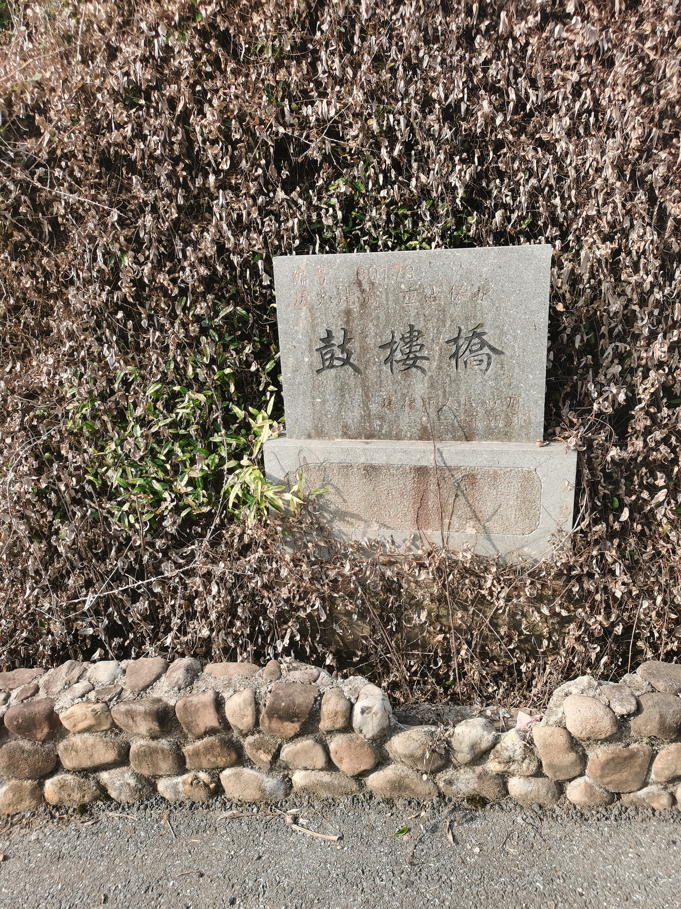
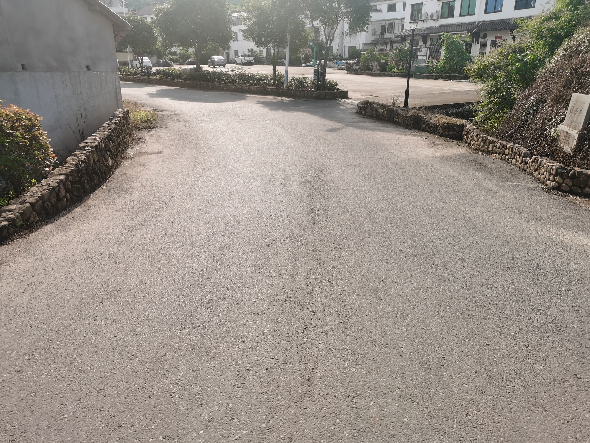

国保石桥
水道上的一处轻巧跨越神仙桥（鼓楼桥）
神仙桥又名鼓楼桥，是全国重点文物保护单位“新叶村乡土建筑”中的一座古桥。两个名称共同指向这处村落水系中的通行节点。
01
村中四座主要古桥之一

鼓楼桥、睦邻桥、万枝桥和下童桥并称新叶村四座主要古桥。它们分布在村落水道与道路之间，把桥梁的通行功能嵌入古村整体空间。
02
连接两岸的日常尺度

神仙桥跨过村中水道，两端与道路相接。接近桥面时，水岸、桥身和附近屋舍同时进入视野，一座小桥也由此成为阅读新叶水系与街巷关系的入口。